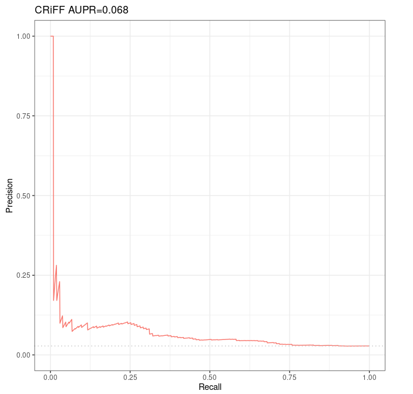

Evaluation of Moore et al 's DNase-expression correlation method over Fulco et al CRISPRi-FlowFISH validation dataset¶
Prerequisites¶
First we need to download the curated DNase counts from http://big.databio.org/papers/RED/supplement/ (see p. 14 of the BENGI paper).
Correlation-Methods/ └── Sheffield └── Signal-Matrices ├── dhs112_v3_int.bed ├── dhs112_v3_int.bed.gz └── exp112.bed
Note that, in the Python code, we will have to use the appropriate argument for the column 87 of exp112.bed, corresponding to K562, to be selected instead of the one corresponding to GM12878. Fortunately, it suffices to provide "K562" as an argument for this purpose.
Partial reimplementation of Run-Sheffield.sh¶
First of all we made a copy of all scripts, ie we duplicated Scripts folder in a new folder which we named local_Scripts.
We adapted of local_Scripts/Unsupervised-Methods/Run-Sheffield.sh in local_Scripts/Unsupervised-Methods/CRISPRiFF_Run-Sheffield.sh to use the CRISPRi-FlowFISH validation dataset.
#!/bin/bash
#################
## DEPENDENCIES #
#################
# bedtools
# python2
# scipy
#################
## INPUT ARGS: ##
#################
# $1: `intermediate_output` relative_path to parent folder for intermediate results.
# Folder need not exist yet.
# WARNING: some inputs are not passed as args, see code below!
#################
#### OUTPUT #####
#################
# els.bed: input data (DNase, expression) are intersected with ccREs
# Then, the result is sorted and uniqued.
# enhancer-matrix.bed
# genes
# genesFull
# Inserm computer
#workDir=~/Documents
# Personal computer
#workDir=~/Documents/INSERM
# Genotoul
workDir=/work2/project/regenet/workspace/thoellinger
ccres=$workDir/BENGI/Benchmark/Annotations/hg19-cCREs.bed
gnid_gname=/work2/project/fragencode/data/species.bk/homo_sapiens/hg19.gencv19/homo_sapiens.gnid.gnname.tsv
# One must create the following repository before launching the script:
signalDir=$workDir/BENGI/Correlation-Methods/Sheffield/
featureDir=$signalDir/Signal-Matrices # must contain DNase counts and gene expression
# "dhs112_v3_int.bed", "exp112.bed"
# see (http://big.databio.org/papers/RED/supplement/)
intermediate_outputs_dir=$1 # All output that are not final results are
# going to be stored here. Need not exist before launching the
# script
intermediate_outputs=$intermediate_outputs_dir/K562.CRISPRi.FlowFISH
genes=$intermediate_outputs/genes # need not exist yet
genesFull=$intermediate_outputs/genesFull # need not exist yet
els=$intermediate_outputs/els.bed # need not exist yet
enhancer_matrix=$intermediate_outputs/enhancer-matrix.txt # need not exist yet
biosample=K562
echo $biosample
train=/work2/project/regenet/workspace/thoellinger/CRISPRi_FlowFISH/k562/3672_ccRE_gene_pairs.fulco.txt
scriptDir=$workDir/BENGI/local_Scripts/Unsupervised-Methods
outputDir=$signalDir/Results
mkdir -p $outputDir
mkdir -p $intermediate_outputs
# dhs112_v3_int.bed (http://big.databio.org/papers/RED/supplement/) is space-delimited
# so we first replace spaces by tabs. It contains the DNase counts over whole genome
# for 112 cell types.
# exp112.bed: idem. It contains the gene expressions for 112 cell types.
if [[ ! -f $els ]]; then
echo "Finding ccRE-dELS in input data..."
awk 'FNR==NR {x[$1];next} ($5 in x)' $train $ccres | awk '{print $1 "\t" \
$2 "\t" $3 "\t" $5}' | sort -u > $els
fi
# Warning: the following requires a lot of memory
if [[ ! -f $featureDir/dhs112_v3_int_tab.bed ]]; then
echo "dhs112 => dhs112_tab..."
awk 'BEGIN{} {n=split($0, line, " "); ORS="\n"; print line[0]; ORS="\t"; for(u=1; u<n; u++){print line[u]}; ORS=""; print line[n]}' $featureDir/dhs112_v3_int.bed > $featureDir/dhs112_v3_int_tab.bed
fi
if [[ ! -f $enhancer_matrix ]]; then
echo "Building enhancer matrix (DNase counts for all the input cell types) using bedtools... This can take several minutes..."
bedtools intersect -wo -a $els -b $featureDir/dhs112_v3_int_tab.bed > $enhancer_matrix
fi
# enhancer-matrix.txt contains:
# $1 to $4: enhancer infos, bed-like format
# $5 to $7: for the current enhancer, chr, start and end of an overlapping DHS.
# $8 to $(n_columns-1): respective DNase counts for all the 112
# cell types encountered in dhs112_v3_int_tab.bed
# $n_columns: length (in bp) of the overlap
if [[ ! -f $genes ]]; then
echo "Finding all genes in input..."
cat $train | awk '{print $2}' | sort -u > $genes
fi
if [[ ! -f $genesFull ]]; then
echo "Computing gene list (<id> <name>)..."
awk 'FNR==NR {x[$1];next} ($1 in x)' $genes $gnid_gname > $genesFull
fi
if [[ ! -f $featureDir/exp112_tab.bed ]]; then
echo "Adapting expression file format..."
awk '{n=split($0, line, " "); ORS="\n"; if(NR==1){ORS=""}; print line[0]; ORS="\t"; for(u=1; u<n; u++){print line[u]}; ORS=""; print line[n]}' $featureDir/exp112.bed > $featureDir/exp112_tab.bed
fi
# we replaced `$stats` by NOTHING as we do not use this argument.
# "$biosample" is not a window dressing argument, it is the key of a dictionnary defined in the Python script, which provide the correct
# column of "exp112_tab.bed"
echo "Running python script... This can take several minutes..."
python $scriptDir/sheffield.correlation.py $featureDir/exp112_tab.bed $genesFull $enhancer_matrix NOTHING $train $biosample |sort -t $'\t' -k 5,6 > $outputDir/$biosample.CRISPRi-FlowFISH-Correlation.txt
Partial reimplementation of sheffield.correlation.py¶
We adapted of local_Scripts/Unsupervised-Methods/sheffield.correlation.py in local_Scripts/Unsupervised-Methods/CRISPRiFF_sheffield.correlation.py.sh to use the CRISPRi-FlowFISH validation dataset.
Actually, we had nothing to change wrt our previous partial reimplementations.
#!/usr/bin/python
# -*- coding: utf-8 -*-
import sys, scipy, math
from scipy import stats
import numpy as np # to reconstruct statDict "by hand"
from itertools import groupby
# We use all_equal to prevent a division-by-zero error in Calculate_Correlation
def all_equal(iterable):
g = groupby(iterable)
return next(g, True) and not next(g, False)
def Process_Biosample(biosample):
biosampleDict={"GM12878":28, "HeLa":50, "K562":88,"HMEC":59,"NHEK":100}
if biosample in biosampleDict:
return biosampleDict[biosample]
else:
return "no"
def Calculate_Correlation(array1, array2):
if not (all_equal(array1) or all_equal(array2)):
stat=stats.pearsonr(array1, array2)[0]
else:
stat = float('NaN')
return stat
def Create_Gene_Dict(genes):
geneDict={}
genes.next() #skips header
for line in genes:
line=line.rstrip().split("\t")
geneDict[line[3]]=[float(i) for i in line[5:]]
return geneDict
def Create_ELS_Dict(els, column):
elsDictA={}
elsDictB={}
for line in els:
line=line.rstrip().split("\t")
if column == "no":
score=max(float(i) for i in line[7:-1])
else:
score=float(line[column])
if line[3] not in elsDictA:
elsDictA[line[3]]=[float(line[-1]),score] # [size of overlap, counts fot the cell type considered]
elsDictB[line[3]]=[float(i) for i in line[7:-1]] # [size of overlap, [counts for all cell types]]
elif elsDictA[line[3]][0] < float(line[-1]):
# See comment below first. Here, same kind of thing, but it is about maximizing the overlap.
# Note that first the overlap is maximized, and only then the counts are maximized.
# This has SEVERE IMPLICATIONS: if there are 1000 counts for a candidate enhancer with which the
# overlap is 149, and at best 3 counts for enhancers with overlap 150, the ones with overlap 150 and 3
# counts only are kept...
# To prevent such a "side effect", one may replace the following "elif" with an "if"
# I personnaly think this side effect is undesirable, but here we keep the "elif"
# to obtain the same results as Moore et al.
elsDictA[line[3]]=[float(line[-1]),score]
elsDictB[line[3]]=[float(i) for i in line[7:-1]]
elif elsDictA[line[3]][1] < score: # note that all peak widths are 150
# if counts for another open chromatin region overlapping this enhancer has already been written,
# but are fewer than for the current open chromatin region overlapping this same enhancer,
# then we overwrite the counts with these new ones.
# At the end of the day, this results in taking into account, for each enhancer, only the open chromatin
# region that maximize the counts of DNase over a given enhancer ; although the selection is made among
# regions that maximize the overlap only, see comment above.
elsDictA[line[3]]=[float(line[-1]),score]
elsDictB[line[3]]=[float(i) for i in line[7:-1]]
# Well at the end of the day, elsDictB[key="enhancer id"] = [max overlap with a DHS, max counts in this DHS]
return elsDictB, elsDictA
def Create_Symbol_Dict(symbols):
symbolDict={}
for line in symbols:
line=line.rstrip().split("\t")
symbolDict[line[0]]=line[1]
return symbolDict
def Create_Stat_Dict(stats):
# For now we know that:
# stat (argv[4]) must contain at least 3 columns
# first column is a gene id (see for loop at the end of the code)
# 2nd and 3rd columns are float / real numbers.
# Both are later compared to correlations.
statDict={}
for line in stats:
line=line.rstrip().split("\t")
statDict[line[0].rstrip()]=[float(line[1]),float(line[2])]
return statDict
genes=open(sys.argv[1]) # gene expression
geneDict=Create_Gene_Dict(genes)
genes.close()
# geneDict[key = "gene NAME (not id)"] = [expression in cell line 1, expression in cell line 2, etc]
symbols=open(sys.argv[2]) # gene annotation
symbolDict=Create_Symbol_Dict(symbols)
symbols.close()
column=Process_Biosample(sys.argv[6]) # the correct column is 28 for GM12878
els=open(sys.argv[3]) # ccRE expression
elsDict, test =Create_ELS_Dict(els,column)
els.close()
# elsDict[key="enhancer id"] = [max overlap of this enhancer with a DHS, max counts for this max overlap]
# For now we try to rebuild statArray directly in this script.
#stat=open(sys.argv[4])
#statArray = Create_Stat_Dict(stat)
#stat.close()
# On essaye ci-dessous
# On le fait volontairement d'une maniere très peu optimisée, c'est juste pour tester, en évitant d'induire d'autres sources
# potentielles de problèmes
pairs=open(sys.argv[5]) # BENGI benchmark
all_cor = {}
for line in pairs:
line=line.rstrip().split("\t")
els=line[0] # candidate enhancer id
gene=symbolDict[line[1].rstrip()] # name (not id) of candidate paired gene
if els in elsDict and gene in geneDict:
if gene in all_cor:
all_cor[gene].append(Calculate_Correlation(elsDict[els],geneDict[gene]))
else:
all_cor[gene] = [Calculate_Correlation(elsDict[els],geneDict[gene])]
pairs.close()
# Now for each gene name of gene id found in the benchmark pairs, all_cor[gene] should
# be the list of the correlations of its expression accross all cell lines, with
# the counts of DNase accross all cell lines, for enhancers it is paired with
pairs=open(sys.argv[5]) # BENGI benchmark
statArray = {}
for line in pairs: #inutile il suffit de boucler sur tous les genes trouves, une seule fois chacun, qu'on aurait du enregistrer precedemment deja
line=line.rstrip().split("\t")
els=line[0] # candidate enhancer id
gene=symbolDict[line[1].rstrip()] # name (not id) of candidate paired gene
if els in elsDict and gene in geneDict:
if gene not in statArray:
statArray[gene] = [np.mean(all_cor[gene]), np.std(all_cor[gene])]
pairs.close()
pairs=open(sys.argv[5]) # BENGI benchmark
for line in pairs:
line=line.rstrip().split("\t")
els=line[0] # candidate enhancer
gene=symbolDict[line[1].rstrip()] # name (not id) of candidate paired gene
if els in elsDict and gene in geneDict:
cor=Calculate_Correlation(elsDict[els],geneDict[gene]) # correlation between counts of DNase over els and gene expression accross the 112 biosamples
# cor est la corrélation entre les counts max de DNase sur els, et l'expression du gène appairé avec cet els.
# On a dit que :
# statArray devait être issu d'un fichier de trois colonnes qui est tel que :
# La clef est un id de gene (visiblement plutôt un NOM de gène ! - pourquoi pas...)
# La première valeur est, pour chaque gène, la corrélation moyenne qu'on trouve entre ce gène et les ccRE auxquels il est appairé
# La deuxième valeur est, pour chaque gène, l'écart-type de ces mêmes corrélations.
if math.isnan(cor):
cor=0
if statArray[gene][1] != 0:
Z=(cor-statArray[gene][0])/statArray[gene][1]
else:
Z=0
p=stats.norm.sf(abs(Z))*2
print line[2], "\t", cor, "\t", p, "\t", Z, "\t", els, "\t", line[1]
else:
pass
print line[2], "\t", -100, "\t", 1, "\t", -100, "\t", els, "\t", line[1]
Running the code for BENGI benchmarks over GM12878¶
If working on Genotoul, start with:
conda activate base && conda activate abcmodel && conda activate py2 && module load bioinfo/bedtools-2.27.1
and before launching the script, do not forget (a lot of memory is required):
srun --mem=8G --pty bash
Now it suffices to run Run-Sheffield.sh over the CRISPRi-FlowFISH validation dataset:
./local_Scripts/Unsupervised-Methods/CRISPRiFF_Run-Sheffield.sh Correlation-Methods/Sheffield
./local_Scripts/Unsupervised-Methods/Run-Sheffield.sh GM12878.CHiC v3 Correlation-Methods/SheffieldK562 Finding ccRE-dELS in input data... Building enhancer matrix (DNase counts for all the input cell types) using bedtools... This can take several minutes... Finding all genes in input... Computing gene list (
)... Running python script... This can take several minutes...
Analysis with R¶
Code¶
.badCode {
background-color: #C9DDE4;
}
library(knitr)
## Global options
options(max.print="75")
opts_chunk$set(echo=TRUE,
cache=FALSE,
prompt=FALSE,
tidy=TRUE,
comment=NA,
message=FALSE,
warning=FALSE,
class.source="badCode")
opts_knit$set(width=75)
library(ggplot2)
library(ggpubr) # for ggarrange
library(dplyr) # for bind_rows
# Tools for precision-recall : (see https://classeval.wordpress.com/tools-for-roc-and-precision-recall/)
library(precrec)
#library(ROCR)
#library(pROC)
#library(PRROC)
rm(list = ls())
# Personal
work_dir = "~/Documents/INSERM/"
# Inserm
#work_dir = "~/Documents/"
#####################
## Distance method ##
#####################
path_to_results = paste(work_dir, "BENGI/Correlation-Methods/Sheffield/Results/", sep='')
file_names = c("K562.CRISPRi-FlowFISH-Correlation.txt")
short_names = c('CRiFF')
nb_files = length(file_names)
colnames <- c('interaction', 'cor', 'p', 'Z', 'ccRE', 'gene')
results <- sapply(file_names, simplify=FALSE, function(file_name){
Df <- read.table(paste(path_to_results, as.character(file_name), sep=''), sep='\t')
Df[[1]] <- factor(Df[[1]], levels=c(0,1), labels=c("no interaction", "interaction"))
names(Df) <- colnames
return(Df)
})
names(results) <- short_names
#library(dplyr)
All_results <- bind_rows(results, .id = 'method')
ggplot(aes(y = cor, x = method, fill = interaction), data = All_results) + geom_boxplot()
sscurves_dnase_expression <- list()
sscurves_dnase_expression <- sapply(results, simplify=FALSE, function(Df){
evalmod(scores = Df$cor, labels = Df$interaction) # comes with "precrec" library
})
#library(ggplot2)
p1 <- autoplot(sscurves_dnase_expression[[1]], curvetype = c("PRC")) + ggtitle(paste(short_names[1], signif(attr(sscurves_dnase_expression[[1]], 'auc')[[4]][2], digits=2), sep = " AUPR="))
# ggarrange comes with library('ggpubr')
figure <- ggarrange(p1,
ncol = 1, nrow = 1)
figure
Results¶
